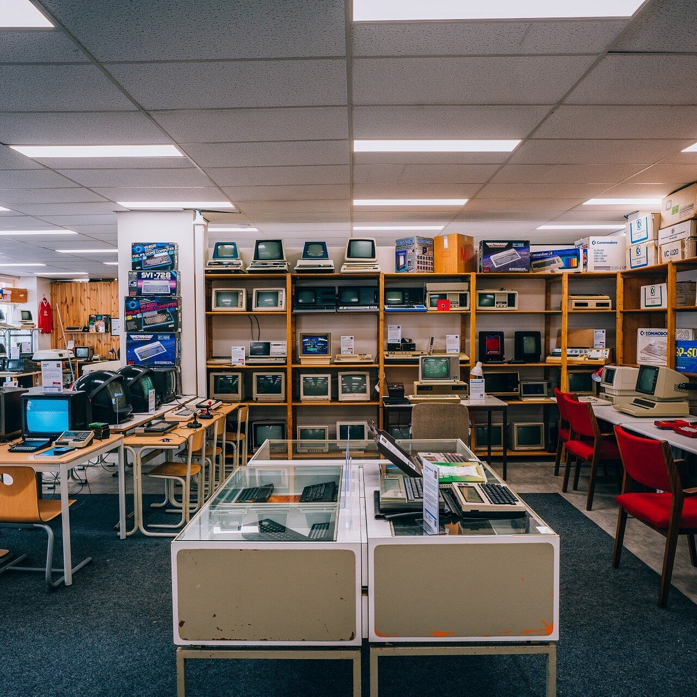

Computer Museum
Het HomeComputerMuseum is een interactieve tijdreis door de geschiedenis van de (thuis)computer en aanverwante apparaten middels kamers in stijl van de desbetreffende jaren. Met een gespecialiseerde werkplaats voor reparatie en een arcadecafé is dit museum uniek in de Benelux.